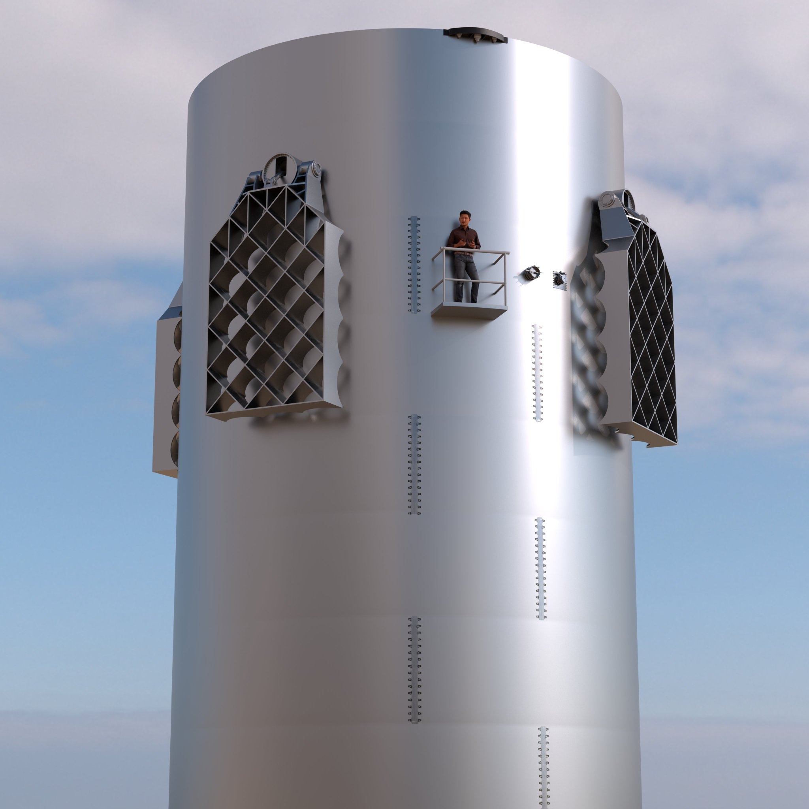

Falcon Heavy is the most powerful operational rocket in the world by a factor of two. With the ability to lift into orbit nearly 64 metric tons (141,000 lb) Falcon Heavy can lift more than twice the payload of the next closest operational vehicle, the Delta IV Heavy. Falcon Heavy is composed of three Falcon 9 nine-engine cores whose 27 Merlin engines together generate more than 5 million pounds of thrust at liftoff, equal to approximately eighteen 747 aircraft.
Falcon Heavy is a partially reusable heavy-lift launch vehicle that is produced by SpaceX, an American aerospace manufacturer. The rocket consists of two strap-on boosters made from Falcon 9 first stages, a center core also made from a Falcon 9 first stage, and a second stage on top.[8] Falcon Heavy has the highest payload capacity of any currently operational launch vehicle and the third-highest capacity of any rocket ever to reach orbit, trailing the Saturn V and Energia.
Three cores make up the first stage of Falcon Heavy. The side cores, or boosters, are connected on the nosecone, the interstage, and on the octaweb. Shortly after liftoff the center core engines are throttled down. After the side cores separate, the center core engines throttle back up to full thrust.

FALCON HEAVY
INTER STAGE
The interstage is a composite structure that connects the center core on the first stage and second stages and holds the release and separation system.
GRID FINS
Falcon Heavy is equipped with 12 hypersonic grid fins, four on each booster, positioned at the base of the interstage or nosecone which orients by moving the center of pressure during reentry.
FALCON HEAVY
SECOND STAGE
Falcon Heavy draws upon Falcon 9's proven design, which minimizes stage separation events and maximizes reliability. The second-stage Merlin Vacuum Engine delivers the rocket’s payload to orbit after the main engines cut off and the first-stage cores separate

.jpg)
.jpg)